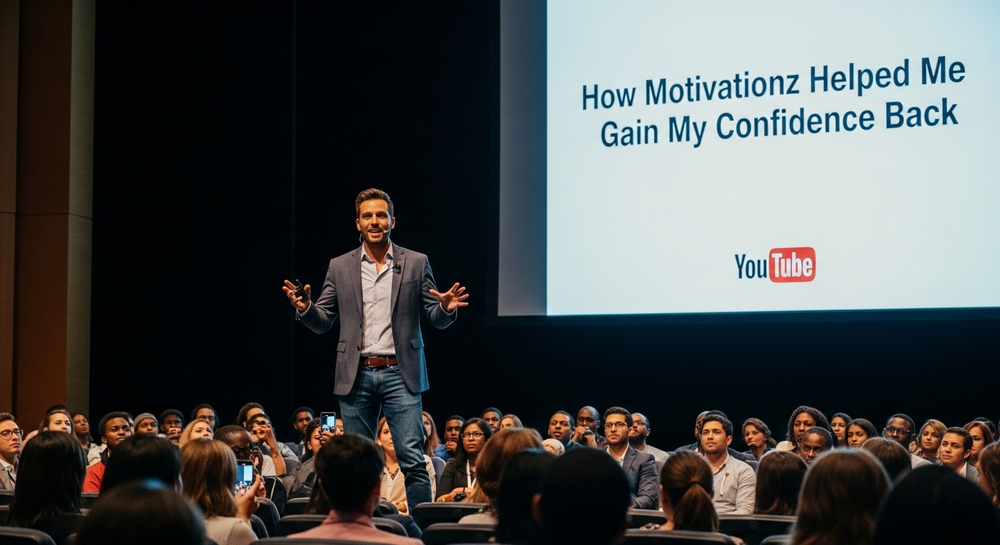

The Day I Stopped Drifting — And How Motivation Changed Everything
Introduction: I Was Living on Autopilot
Let me be honest with you.
A while back, I was stuck. Not in a dramatic, movie-kind-of-way — just stuck in that quiet, foggy kind of life where every day looks exactly the same as the one before it. I woke up, went through the motions, went to sleep, and did it all over again. No goals. No fire. No real reason to push harder.
Maybe you know that feeling. That hollow "what's the point?" feeling that creeps in when you're not sure where you're going or who you're becoming. I wasn't depressed. I was just unmotivated. And honestly? That might be the most dangerous state a person can be in — because nothing hurts, but nothing grows either.
One Video. One Night. Everything Changed.
It was a random Tuesday night. I couldn't sleep. I was scrolling through YouTube when I came across a channel called Motivationz. I almost scrolled past it. But something made me stop. I pressed play. And for the next ten minutes, I sat completely still. It wasn't just words. It was the energy behind the words. The message felt like it was made specifically for someone like me — someone who had quietly started giving up on themselves without even realizing it. By the time the video ended, I had a lump in my throat and a fire in my chest that I hadn't felt in years.
That was my turning point. Not because one video magically fixed everything. But because it reminded me of something I had completely forgotten — that I still had a choice. That it wasn't too late. That the version of me I used to dream about was still possible.
So What Exactly Does Motivation Do?
Here's what most people get wrong about motivation: they think it's just a feeling. Something that either shows up on its own or it doesn't. They sit around waiting for it like it's a bus that runs on no fixed schedule. But motivation is not something you wait for. It's something you build. And one of the most powerful ways to build it is by surrounding yourself with the right voices, the right stories, and the right content every single day.
What motivation actually helps you do:
- It rewires how you think about yourself.
- It builds real, quiet confidence.
- It breaks the cycle of inaction.
- It reminds you that others have been where you are.
- It sharpens your focus and reconnects you to your purpose.
My Story: How Motivationz Helped Me Gain My Confidence Back
After that first video, I subscribed to Motivationz and started watching regularly. At first, I was just watching. Feeling good for a few minutes and then going back to my usual routine. But then something interesting started happening. I started waking up a little earlier — not because an alarm forced me, but because I was genuinely looking forward to starting my day. I started finishing things I had been putting off for months. Not because I suddenly had more hours in the day, but because I stopped letting fear and self-doubt make decisions for me.
I remember one specific morning. I had a conversation I had been dreading for weeks — something I kept avoiding because I was scared of being judged. That morning, I watched a short video on Motivationz before I picked up my phone to make that call. The video talked about courage not being the absence of fear, but taking action despite it. I made the call. It went fine. Actually, better than fine. My confidence didn't come back all at once. It came back in small pieces — one decision, one brave action, one completed goal at a time. And the content from Motivationz was the thread that ran through all of it.

Why Motivationz Is Different From Other Channels
There are hundreds of motivational channels on YouTube. So why am I specifically talking about Motivationz? Because most motivational content starts feeling the same after a while. The same speeches, the same cinematic music, the same recycled lines about grinding and hustling. Motivationz hits differently. The content speaks to something real. It doesn't just pump you up and send you on your way. It actually reaches you — the tired part of you, the doubting part, the part that wants more but doesn't know how to start. It speaks to that part with honesty and warmth, not just hype. That is rare. And that is why it works.
Make it a part of your daily morning ritual — you won't regret it.
How to Actually Use Motivation So It Sticks
Watching one motivational video and expecting your life to change is like eating one salad and expecting to get fit. It doesn't work that way. Motivation works when it's consistent — when it becomes a daily habit, not a one-time event.
- Watch first thing in the morning. Before you check messages, give yourself ten minutes that fill you up.
- Use it before hard tasks. About to do something scary? Watch a short Motivationz video as a mental warm-up.
- Write down what resonates. Keep a small notebook and revisit those powerful lines.
- Pair it with action. After each video, take one small step toward any goal.
- Stay consistent. Subscribe and make Motivationz part of your growth toolkit.
You're Not Broken. You're Just Uninspired.
If you're feeling stuck, lost, or like you've completely lost your spark — you are not broken. You don't need to be fixed. You just need the right input. We become what we consume. Fill your mind with doubt, comparison, and negativity and that is what grows inside you. But fill it with stories of resilience, with voices that believe in human potential, with content that reminds you of your own strength — and something inside you wakes up. That is exactly what Motivationz did for me. One video on a sleepless Tuesday night started a chain reaction that slowly but surely brought me back to myself.
Your Future Self Is Already Proud
So don't wait for motivation to find you. Go find it. Right now. Today. Press play. And see what happens when you decide to stop settling and start becoming who you were always meant to be.